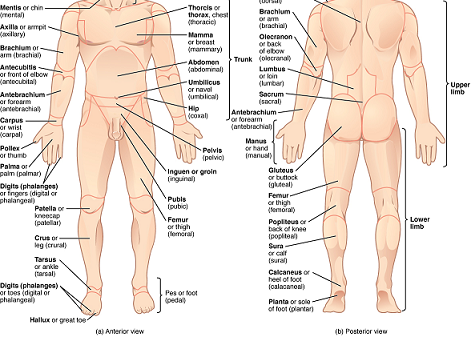

The Limbs
General Structures
The arms and legs are called the limbs. The upper extremity (arm) consists of the upper arm, the elbow, the forearm, the wrist and the hand with four fingers and one thumb. The inner side of the hand is called the palm. The finger nails protect the finger tips.
The lower extremity (leg) is attached to the pelvic girdle. It is composed of the thigh, the knee with patella, the shin, the calf, the ankle and the foot. Each foot has a heel, a sole and five toes.
Each limb is made up of a basal segment or girdle, and a free part divided into proximal, middle and distal segments. The girdle attaches the limb to the axial skeleton. The distal segment carries the five digits.
| Information/Organs | Shoulder Region | Arm | Forearm | Hand |
|---|---|---|---|---|
| Facts | Shoulder Region includes breast region, on the front of the chest; armpit and the scapular region on the back comprising parts around the scapula. The bones of the shoulder girdle are the clavicle and the scapula. | Also called upper arm, the arm extends from the shoulder to the elbow. The bone of the arm is the humerus. Its upper end meets the scapula and from the shoulder joint. The shoulder joint permits movements of the arm. | Forearm extends from the elbow to the wrist. The bones of the forearm are the radius and the ulna. At their upper ends, they meet the lower end of the humerus to form the elbow joint. Their lower ends meet the carpal bones to form the wrist joint. | Hand is composed of the wrist; the hand proper and five digits. |
| Functions | The upper limb from shoulder to forearm functions to position the hand at the desirable place. They lift and rotate to reach something. Apart from enabling hand reach something, they also stabilize the limb so that hand could function to its best. | Hand is the most evolved organ in the upper limb and most of our abilities to do work are reflected by our hand functions. Apart from these motor functions, we also use our hands for sensory functions. | ||
| Effect to Health | Lifting heavy objects. Putting pressure on something for too long, for example job requirements. Accidents. These factors may decrease the functions of the upper extremity, cause working inproperly. | |||
| Stay Healthy | Prevent lifting too heavy things in a long time. Doing excercises to strengthen the arms and hands, especially yoga, which increases flexibility for later time. | |||
| Information/Organs | Thigh | Knee | Ankle | Foot |
|---|---|---|---|---|
| Facts | The area that runs from the hip to the knee in each leg. Thigh bone is the longest bone in the body. It's also one of the strongest. It can account for about a quarter of someone's height. Thigh includes hamstrings and quadriceps muscles. | The knee joins the upper leg and the lower leg. It's also the largest joint in the body. | The ankle is a joint that connects the lower leg to the foot. | The feet are made up of many bones, muscles, and ligaments. In fact, nearly one-quarter of the bones in the body are found in the feet. |
| Functions | Thanks to thenhamstrings and quadriceps muscles inside the thigh, our knees are allowed to bend and straighten from a bend position. | In addition to bearing the weight of the upper body, the knee allows for walking, running, and jumping. It also allows for rotation and pivoting. | Its main function is to allow for plantar flexion and dorsiflexion of the foot. | Feet support the whole body and allow for a range of movements. |
| Effect to Health | As holders for the whole body, lower extremity play the critical role so that could not be injured by outside factors, such as accidents. Standing for too long can also has the bad effects. | |||
| Stay Healthy | The extreme priority is excercise for the lower extremity, walking, cycling, jogging could maintain a strong "holders" for the entire parts. | |||